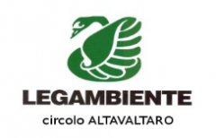
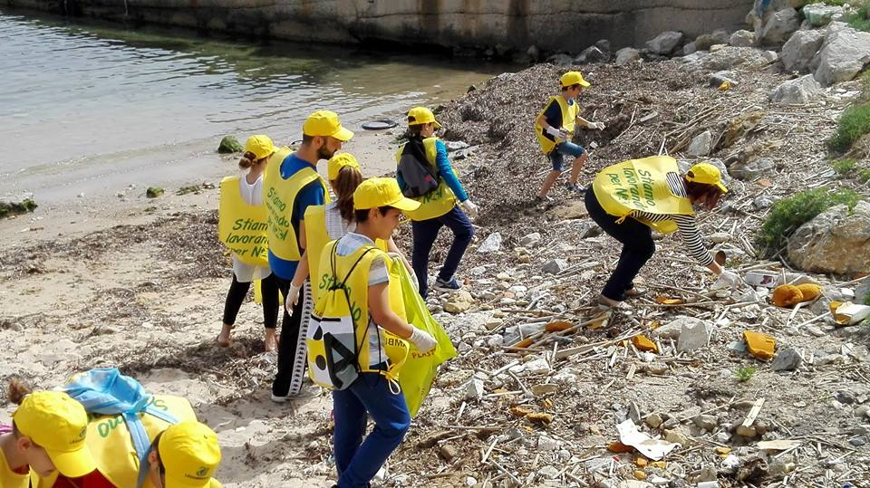

Storia Legambiente
Legambiente è nata nel 1980 sull'onda del movimento ecologista
e antinucleare che si sviluppò in tutto il mondo occidentale nella
seconda metà degli anni settanta, ed è un'associazione apartitica,
aperta ai cittadini di tutte le convinzioni politiche e religiose,
organizzata in una sede nazionale, comitati regionali e circoli
terriotoriali. La nostra idea di ecologismo si fonda sulla difesa
dell'ambiente e sulla necessità di costruire una società equa,
solidale e sostenibile. Per questo siamo quotidianamente impegnati
nella tutela della biodiversità e nella lotta ai cambiamenti climatici,
all'inquinamento e alla cementificazione, credendo nella partecipazione
delle persone e nel dialogo anche con chi non la pensa come noi.
Da sempre agiamo nei confronti del governo nazionale e regionale
per fermare provvedimenti e progetti sbagliati, e ottenere invece la
promulgazione di leggi utili a preservare la natura e garantire la
qualità di vita dei cittadini. Ma la nostra forza è l'impegno sui
territori
per combattere contro tutto ciò che può danneggiare l'ecosistema e la
vita delle comunità locali, coinvolgendo i cittadini in progetti di
cambiamento e miglioramento della qualità della loro vita. tratto
distintivo dell'associazione è da sempre l'ambientalismo scientifico,
la scelta, cioè, di fondare ogni inziativa per la difesa dell'ambiente
su una solida base di dati scientifici, cosa che ci ha permesso di
accompagnare le nostre battaglie con proposte di alternative concrete,
realistiche e praticabili.
Obiettivi del nostro circolo
Tutelare l'Appennino e la vita delle comunità di montagna; valorizzare
il territorio e il turismo sostenibile; agricoltura sostenibile;
ottenere
una legge regionale che fermi il consumo di suolo ed incentivi le
ristrutturazioini; energia rinnovabile compatibile con le
caratteristiche
del territorio; preservare la qualità dell'aria nelle nostre valli e
ridurrel'inquinamento atmosferico nelle città; valorizzare i piccoli
comuni; coinvolgere le scuole e tutelare il territorio; aiutare i nostri
comunità a migliorare la raccolta differenziata; potenziale il servizio
ferroviario
regionale.